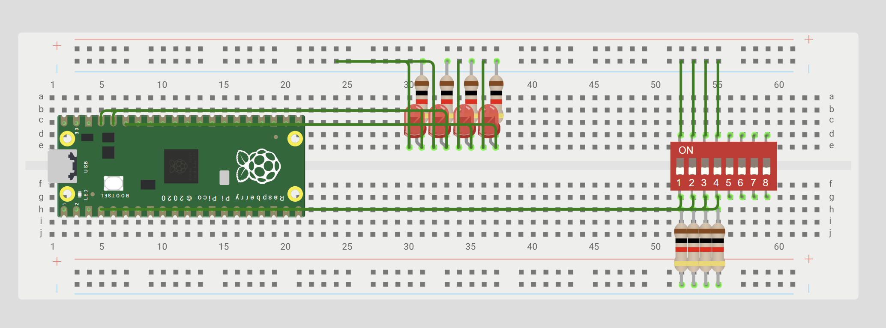

Sesion 2 - Digital inputs
Goal: Configure a GPIO as a digital input to detect the state of a button (HIGH or LOW) and use this information to control an LED.
Prediction: It is expected that when the button connected to the GPIO is pressed, it will detect a low logic level (0) due to the external pull-up resistor and turn on the LED. When the button is released, the GPIO will have a high logic level (1) and the LED will turn off.

Set Up
In this exercise we used the Raspberry Pi Pico 2W, connected to a 4-input switch and 4 LEDs. In most of the exercises we used only two switches and two LEDs, except for the last exercise, in which we used all four LEDs.
Exercise 1.1 AND
What I did
What we did was use an AND gate. The program checks if SW0 and SW1 are HIGH (1). Since the buttons have a pull-up resistor, HIGH means they are not pressed. If both are HIGH, the AND condition is met and gpio_set turns on the LED. If one or both are LOW (0), the condition is false and gpio_clr turns off the LED.
Evidence
Code
while (true) {
// With an (external) pull-up, pressed = 0 (low level)
if ((sio_hw->gpio_in & SW0_BIT && sio_hw->gpio_in & SW1_BIT )) {
sio_hw->gpio_set = LED_AND_BIT; // LED on
printf("ON");
} else {
sio_hw->gpio_clr = LED_AND_BIT; // LED Off
printf("OFF");
}
}
Exercise 1.2 OR
What I did
What we did was use an OR gate. The program checks if SW0 or SW1 are HIGH (1). If either is HIGH, the OR condition is met and the LED turns on. The LED only turns off when both buttons are LOW (0), since in that case neither condition is met and the LED turns off.
Evidence
Code
while (true) {
// With an (external) pull-up, pressed = 0 (low level)
if ((sio_hw->gpio_in & SW0_BIT || sio_hw->gpio_in & SW1_BIT )) {
sio_hw->gpio_set = LED_OR_BIT; // LED on
printf("ON");
} else {
sio_hw->gpio_clr = LED_OR_BIT; // LED Off
printf("OFF");
}
}
Exercise 1.3 XOR
What I did
Here we are using an XOR gate, and we are looking at the states of SW0 and SW1. The LED turns on only when one is HIGH and the other is LOW. If both are HIGH or both are LOW, neither condition is met and the LED turns off.
Evidence
Code
``` while (true) {
// With an (external) pull-up, pressed = 0 (low level)
if ((sio_hw->gpio_in & SW0_BIT) && !(sio_hw->gpio_in & SW1_BIT )) {
sio_hw->gpio_set = LED_XOR_BIT; // LED on
printf("ON");
}
else if (!(sio_hw->gpio_in & SW0_BIT) && (sio_hw->gpio_in & SW1_BIT ))
{
sio_hw->gpio_set = LED_XOR_BIT; // LED on
printf("ON");
}
else {
sio_hw->gpio_clr = LED_XOR_BIT; // LED Off
printf("OFF");
}
sleep_ms(100);
## Exercise 2
### What I did
In this code we use two buttons to control 4 LEDs, one button is used to increase the number from 0 to 3 and the other to decrease it from 3 to 0.
### Evidence
<iframe width="560" height="315" src="https://www.youtube.com/embed/eUvwro2iH7g?si=nyCovm18Fm0YI6Qa" title="YouTube video player" frameborder="0" allow="accelerometer; autoplay; clipboard-write; encrypted-media; gyroscope; picture-in-picture; web-share" referrerpolicy="strict-origin-when-cross-origin" allowfullscreen></iframe>
### Code
``` while (true) {
// With an external pull-up, pressed = 0 (low level)
if (!(sio_hw->gpio_in & (1u << PIN_BA)) && (flag == 0)) {
counter++;
flag = 1;
sio_hw->gpio_clr = MASK;
}
else if (!(sio_hw->gpio_in & (1u << PIN_BB)) && (flag == 0)) {
counter--;
flag = 1;
sio_hw->gpio_clr = MASK;
}
else if ((sio_hw->gpio_in & (1u << PIN_BA)) &&
(sio_hw->gpio_in & (1u << PIN_BB))) {
flag = 0;
}
if (counter > 3) {
counter = 0;
}
else if (counter < 0) {
counter = 3;
}
sio_hw->gpio_set = (1u << (counter + 10));
sleep_ms(100);
}
What went wrong
- The first thing that went wrong was the switch connection, as we connected it the wrong way around. Furthermore, we didn't fully grasp the logic of the gates at first, so we had some trouble figuring out how the code was supposed to work.
Disclosure
- In this lab exercise, we learned to use AND, OR, and XOR gates with a switch and leds, understanding how the output changes based on different input combinations